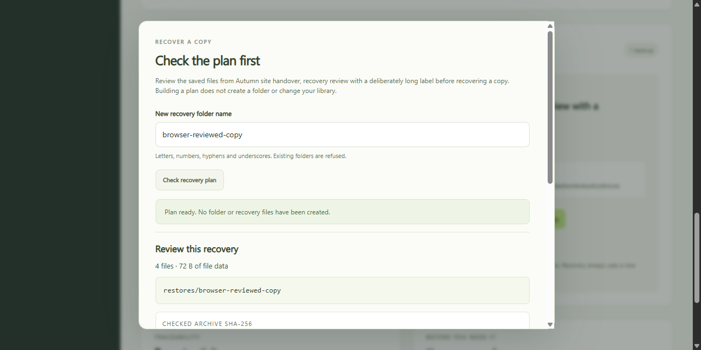
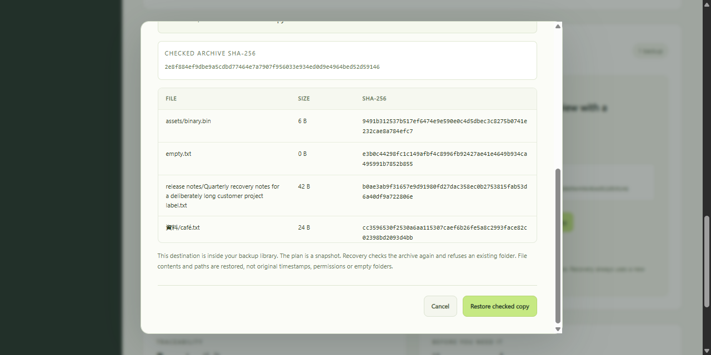
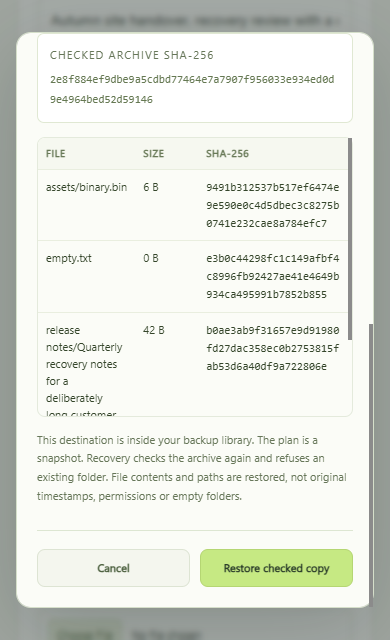

See what will come back.
Choose a new folder name. The plan checks the saved ZIP, shows each file's size and SHA-256, and confirms the destination is unused.
Review the saved files, their fingerprints and the destination before writing a recovered copy. Download fresh verification evidence without changing your backup library.
Version 0.3.0-candidate.1. Requires Node.js 24. This page presents the app. File operations run on your computer after you extract the source and start the local server.

Choose a new folder name. The plan checks the saved ZIP, shows each file's size and SHA-256, and confirms the destination is unused.
A separate button starts recovery. Changing the folder name clears the plan. Recovery checks the archive again and still refuses an existing destination.
The JSON report checks the archive again and lists its relative file paths and hashes. A damaged archive produces an error instead of a passing report.

node server.mjs http://127.0.0.1:4330/ node --test server.test.mjs vendor/cli.test.mjs
The source uses Node.js built-in modules. No runtime package installation, cloud account or registration is needed. Stop the app with Ctrl+C.

The report contains its check time, backup label, archive fingerprint, file counts and the relative path, byte size and SHA-256 of every file. Exporting it does not change the saved verification time or add activity.
Absolute workspace and storage paths are omitted. Labels and filenames may still identify your work. Review the report before sharing it. Hashes establish consistency with the recorded archive, not ownership, trusted origin or the absence of harmful content.
A plan is a dated snapshot. It does not reserve a folder or guarantee that another program cannot change files between checks.
The earlier 0.2 import guide and source remain available. Version 1 libraries and the older name-only recovery request remain supported.
Keep another verified copy on a separate device. Stop programs that may change files while backing up. This preview is not a production backup service, an atomic snapshot or an adversarial filesystem race guarantee.
All 27 backend and CLI tests passed. Eight independent workflows checked read-only planning, report metadata, occupied destinations, changed fingerprints, exact recovery and older request compatibility.
Fourteen browser cases passed. The layout was checked at 320, 390, 768, 1024 and 1280 pixels. Actual downloaded reports matched the recovered Unicode, binary, empty and long-path test files.
The frozen ZIP was freshly extracted and its same 27 tests rerun. Its app imported an existing ZIP into an empty library, reviewed a plan, recovered four exact files and downloaded matching verification JSON. Repeated checks are not extra unique tests.
Tested scope is Windows, Node.js 24.19.0 and the current test browser. Linux and macOS have not been tested. This is independent product work using synthetic files, with no client delivery or customer acceptance claim.